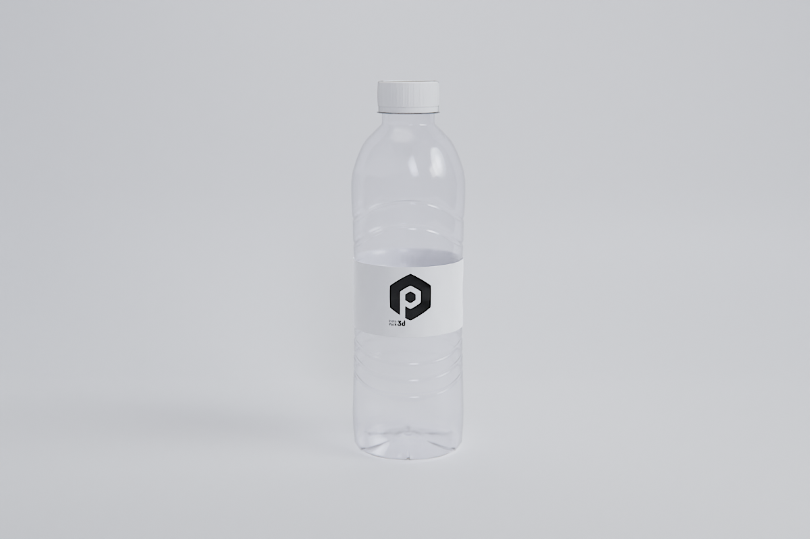
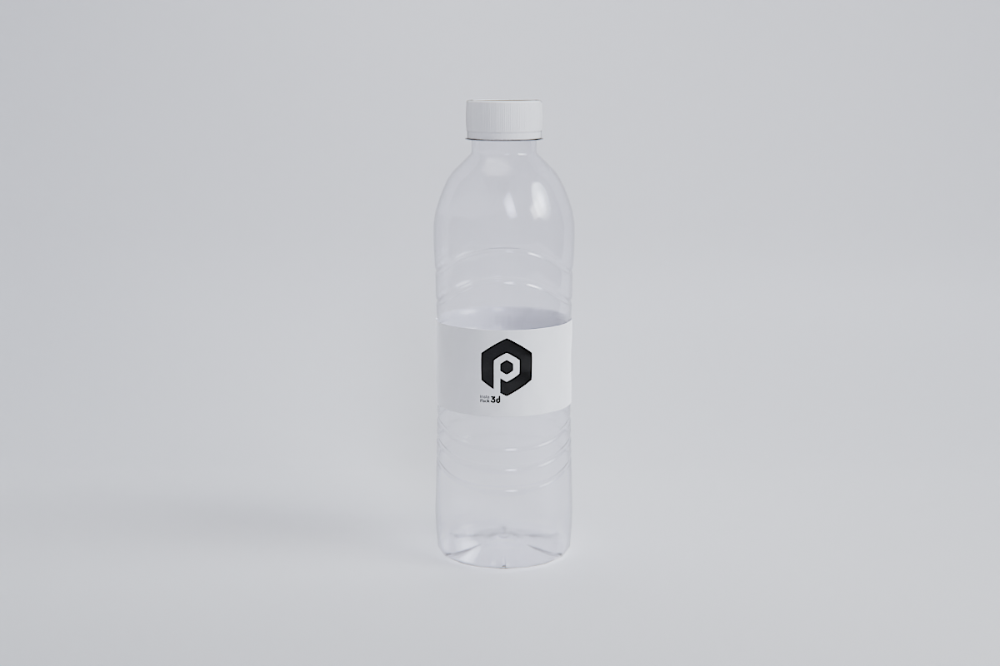
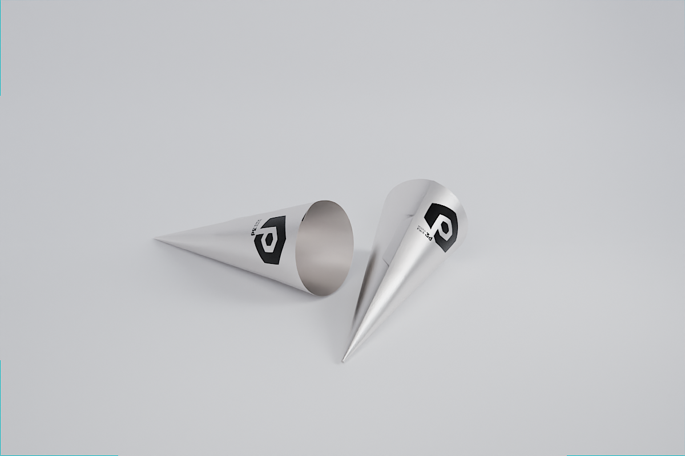
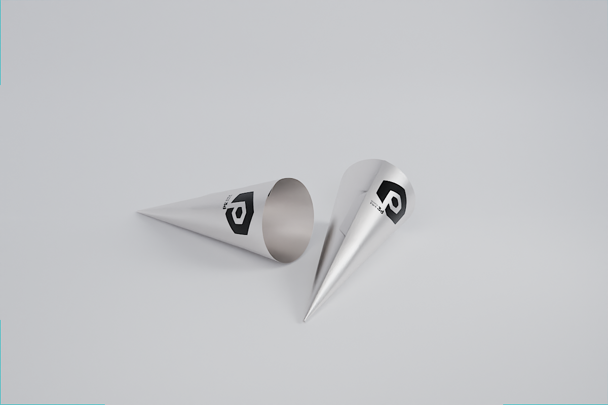

Sobre Mí
"Especialista en modelado 3D con amplia experiencia en la industria del packaging. Destacado en el modelado hard surface y en desarrollar métodos y diseño de herramientas de modelado para optimizar la producción. Apasionado por explorar nuevas oportunidades en el mundo del 3D y comprometido con los proyectos".
Mi nombre es Álvaro Pérez. A lo largo de mi carrera profesional, he pasado por una variedad de trabajos que me han proporcionado una multitud de detalles que reflejo en la digitalización 3D. Comencé en los medios audiovisuales, especialmente en fotografía y video, e incorporé pequeñas animaciones 3D desde el principio. Esa sensación de dominar todo el proceso de creación me fascinó y, aunque me parecía difícil, decidí dedicarme exclusivamente al 3D. Sin duda, ha sido la mejor decisión que he tomado; me encanta este trabajo.
Esto me llevó a estudiar el grado de Comunicación Audiovisual en la Universitat Pompeu Fabra, donde me especialicé en Interactivos. Durante mis estudios, desarrollé un corto animado 3D y mi TFG fue el desarrollo completo del game design de un videojuego junto con la demo técnica. Gracias a esto, conseguí prácticas en una empresa dedicada al sector de la digitalización 3D del packaging, donde posteriormente fui contratado durante cinco años.
Experiencia Profesional
Comencé en el sector del packaging como modelador, envase a envase fui ampliando la biblioteca y conociendo más sobre las semejanzas de los modelos que más tarde me serviría para parametrizar.


 

 



Biblioteca personalizada
Esta ampliación de la biblioteca permitió reutilizar los modelos reduciendo el tiempo de diseño. Implementé sistemas de organización, facilitando la búsqueda y selección de componentes para su incorporación en nuevos diseños. Actualmente tengo a disposición una biblioteca de gran tamaño que cubre todos los sectores, con medidas y referencias físicas que cubren un porcentaje alto de todos los envases de la industria.
Herramientas paramétricas
Aunque la biblioteca tiene muchas ventajas, también presenta limitaciones, como la falta de control sobre los modelos y la producción individualizada. Esto hace que, para grandes producciones aún con modelos similares, sea necesario duplicar y crear modelos uno por uno. Para solucionar esta limitación, busqué una manera de optimizar la producción y descubrí el modelado parametrico con Geometry Nodes de Blender. Esta herramienta me permitió parametrizar envases comunes y así crear herramientas para generar modelos completos de forma más eficiente.
Este enfoque transformó nuestro proceso de producción, permitiendo generar cientos de modelos, con más exactitud debido a su carácter paramétrico y un menor peso de los objetos por su optimización, sustituyendo siempre que sea posible el proceso manual y haciendo posible que otros trabajadores no especializados puedan generar modelos. Como resultado, la eficiencia y productividad de nuestro equipo aumentaron significativamente.
También desarrollé herramientas específicas para facilitar el modelado tradicional y manejar tareas repetitivas y tediosas, que se pueden utilizar en cualquier momento. Por ejemplo, un unwrap que centra el UV y lo ajusta a una forma cuadrada, muy útil para las zonas de personalización, y un generador de roscas y contrarroscas parametrizadas.
Addon de exportación
Otra herramienta que desarrollé para solucionar el problema de la exportación en masa es un addon para Blender creado en Python.
GLTF Export
Renders
Además de la producción de modelos, también realicé otros trabajos, como renders para thumbnails de productos y renders animados para promociones y eventos. Estos renders, que no eran prioritarios, se hacían con menos tiempo y esfuerzo, buscando un impacto efectivo sin requerir una gran dedicación. Por ejemplo estos GIFs animados para mailing.
Experiencia Personal
Como mencioné al principio, mi experiencia personal está estrechamente ligada a la profesional. Ejemplo de esto es mi estudio del modelado paramétrico con Geometry Nodes, que dada su dificultad no sabía cómo aprender esta herramienta ni cómo aplicarla en el trabajo. Por ello, busqué un proyecto personal en el que pudiera aplicar este aprendizaje y motivarme.
Ciudades paramétricas
En ese momento, estaba recreando mi pueblo de la infancia a escala, utilizando Unreal Engine para poder recorrerlo. Esto me llevó a preguntarme cómo generar poblaciones de forma masiva sin tener que colocar cada modelo individualmente, y Geometry Nodes era la solución perfecta. Tras un año de aprendizaje, comencé a dominarlo y pude desarrollar el principio de un generador de ciudades procedurales, esta vez implementándolo en el motor de Godot. Este proyecto me permitió explorar más a fondo esta herramienta y, una vez que tuve la primera idea de cómo aplicarla en mi trabajo, no dejaron de surgir nuevas ideas para aprovechar Geometry Nodes en todos los aspectos.
Assets
Mi interés por el desarrollo de videojuegos y el mundo del 3D en general me mantiene siempre activo. Es por eso que de vez en cuando también me dedico al modelado orgánico, ya sea creando personajes para animarlos y moverlos en motores de videojuegos, o modelando assets para entornos, renders y, en menor medida, para impresión.
Motores de videojuegos
Además del modelado, mi otra pasión son los motores de videojuegos. No tanto por los videojuegos en sí, sino por la interactividad que ofrecen. Mi primer contacto fue con Unity en la demo del TFG, pero eso fue hace bastante tiempo y no refleja mi conocimiento actual. He pasado más tiempo en Unreal sin un proyecto aparente, donde a través de blueprints pude dar vida a personajes y entornos. Sin embargo, cuando comencé a trabajar con Geometry Nodes, descubrí Godot y, al igual que con Blender, me enamoré de su potencial. Actualmente, es donde desarrollo mis proyectos. Aunque mis nociones de programación son básicas, he podido crear todos los scripts necesarios con la ayuda de ChatGPT, al igual que desarrollé el addon de exportación y esta pagina.
Habilidades
En Producción
Evaluación y Planificación del Proyecto: Como encargado de la producción, evalúo detalladamente el producto del cliente que se va a digitalizar. Esto incluye determinar la dificultad del proyecto, calcular fechas de entrega y planificar la estrategia adecuada para su ejecución.
Metodología Adaptada a la Dificultad: Analizo las diferentes formas de abordar la producción basándome en la complejidad del producto. Selecciono la metodología más efectiva para asegurar que el proceso sea óptimo y cumpla con los plazos establecidos.
Innovación y Escalabilidad: Siempre busco nuevas maneras de mejorar y escalar la producción. Implemento métodos y técnicas que optimizan la eficiencia y aseguran que cada producto se realice correctamente.
Control de Calidad: Me aseguro de que todos los productos entregados cumplan con los estándares de calidad requeridos. Realizo revisiones detalladas en cada etapa del proceso para garantizar que el resultado final sea el esperado.
Organización y Respaldo de Producción: Mantengo la producción bien organizada y con copias de seguridad periódicas. Esto asegura que toda la información esté siempre accesible y actualizada, facilitando su uso para futuros proyectos o consultas.
En Modelado
Modelado: Es el apartado donde mi experiencia se expande más, como ya se ha podido comprobar.
Shaders: Al igual que la geometría paramétrica, crear shaders paramétricos es donde más me enfoco. Prefiero tener una biblioteca de shaders paramétricos en lugar de usar el pintado tradicional, aunque si lo necesito, uso Substance Painter, Armorpaint, o el propio Blender.
Texturizado: El packaging en general tiene muchas zonas de personalización, por lo que parte de mi trabajo diario es generar varios tipos de mapas UV. Para ello, he desarrollado herramientas específicas dedicadas a esta tarea.
Iluminación y cámara: Por mi experiencia trabajando con cámaras y mis estudios audiovisuales, tengo un amplio conocimiento sobre iluminación y encuadres que aplico al entorno 3D.
Render: Optimizar los tiempos y ajustar los renders para maximizar la calidad en el menor tiempo posible es otra área que he estudiado a fondo.
Animación: Aunque comencé haciendo animaciones, hoy en día es la parte que menos me interesa.
Softwares


Educación
Grado en Comunicación Audiovisual, Interactivos 2014 - 2018
Nota
El portafolio aún está en construcción y la mayoría del contenido multimedia proviene de trabajos previos que no fueron creados con la intención de ser mostrados. Debido a mi dedicación laboral, nunca he tenido tiempo ni necesidad de presentarlos con mayor calidad. Sin embargo, según la oferta, estoy disponible para realizar cualquier prueba ofreciendo la calidad que merece.
Por otro lado, no he mencionado fechas, empresas ni recomendaciones. Para más información sobre mi experiencia laboral y para contactarme, puedes visitar mi perfil en LinkedIn o enviarme un correo electrónico.
¡Saludos!
Contacto